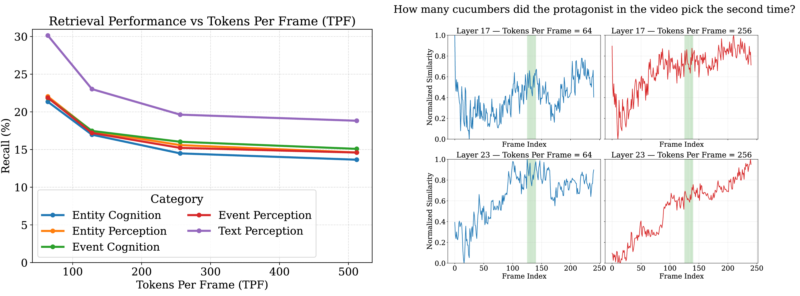

Abstract
Online video understanding requires models to robustly encode, store, and retrieve information from a continuous video stream to support accurate video question answering (VQA). Existing state-of-the-art approaches rely on key-value caching to accumulate frame-level information over time, but use a limited number of tokens per frame, leading to the loss of fine-grained visual details. In this work, we propose scaling the token budget to enable more granular spatial and temporal understanding and reasoning. First, we find that current methods are ill-equipped to handle dense streams: their feature encoding causes query-frame similarity scores to increase over time, biasing retrieval toward later frames. To address this, we introduce an adaptive selection strategy that reduces token redundancy while preserving local spatiotemporal information. We further propose a training-free retrieval mixture-of-experts that leverages external models to better identify relevant frames. Our method, MemStream, achieves +8.0% on CG-Bench, +8.5% on LVBench, and +2.4% on VideoMME (Long) over ReKV with Qwen2.5-VL-7B.
Scaling Tokens Degrades Retrieval Performance

We take a state-of-the-art streaming video understanding approach, ReKV [1], and adapt it for Qwen2.5-VL. We observe that increasing per-frame token budget leads to substantial declines in average layer-wise recall across a variety of different questions on CGBench [2]. Inspecting further, we find that this is due to progressively increasing query-frame similarity scores across the video.
Higher Token Budgets Reduce Discriminability

Since query-frame similarity depends on the quality of the key representations in the KV-cache, we analyze the self-similarity of representative frame vectors in the KV-cache across token budgets. We find that at higher token budgets, frame vectors become more similar, indicating increased redundancy and reduced discriminability. We hypothesize that this is due to the attention mechanism becoming less selective at higher token budgets. We validate this theory by measuring the normalized entropy of the attention scores in the sliding window at varying token budgets. We find that at higher token budgets, the attention entropy increases, indicating less selective behavior across the sliding window.
Method

We introduce MemStream, a training-free unified framework for effective encoding and retrieval of dense video streams. During encoding, we apply an adaptive selection strategy to identify and preserve critical video information in the sliding window. When retrieving from the KV-cache, we propose a retrieval mixture-of-experts that leverages external models to boost retrieval quality.
Adaptive Key Selection (AKS) identifies and eliminates temporal redundancy in the sliding window. For each pair of adjacent key features, we compute patch-wise cosine similarity between corresponding spatial tokens and select the top-k least similar (i.e., most distinctive) patch features, where k is fixed. Our mixture-of-experts retrieval design fuses internal attention-based signals with external vision model retrieval using reciprocal rank fusion (RRF). This approach allows strong retrieval signals from one expert to compensate for weaker signals from another.
Quantitative Results
CG-Bench
LVBench
VideoMME
We show performance on CG-Bench, LVBench, and VideoMME. Replacing full sliding-window attention with our AKS strategy improves performance by 5.5% on CG-Bench and 4.1% on LVBench. Adding our retrieval mixture-of-experts provides an additional 2.4% gain on CG-Bench and 4.3% on LVBench. Our strategy surpasses external retrieval alone with a 2.3% improvement on both CG-Bench and LVBench.
Qualitative Results

We plot examples of representative retrievals for different videos on the CG-Bench dataset. Notably, we observe that ReKV generally retrieves from later parts of the video, while MemStream is able to identify relevant segments found earlier or in the middle of the video.